Globus Data Transfer from SEMC
Introduction
Globus is an application that lets you transfer large amounts of research data efficiently and securely to your personal computer, institution's storage systems or a cloud provider. It eliminates the use of big portable external hard drives that need to be mounted to a local storage to transfer data. The New York Structural Biology Center primarily uses Globus to transfer data that is collected on-site from electron microscopes. To get started with, follow the instructions below.
Logging in to Globus
Typically, you can log into Globus with your institutional credentials. To determine if this is possible, check if your institution is listed under the dropdown menu located on the Globus login page. If it is, you can skip to the next section (Logging in with Institutional Credentials).
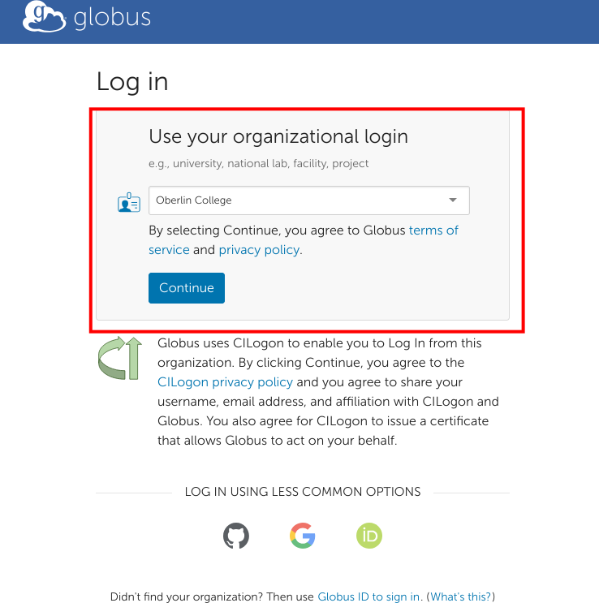
Creating an ORCID Account and Linking it with Globus
If you do not have access to Globus via your institution, you can use your ORCID to sign in to Globus. If you do not already have an ORCID, you can sign up for one here. To sign in with your ORCID, you will need to click the green ORCID button on the login page:
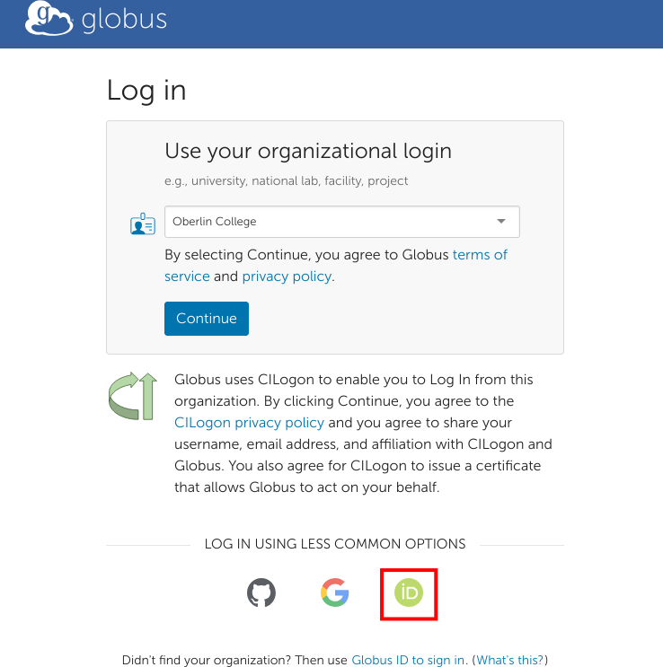
You will then be prompted to connect your ORCID to Globus. Click the Authorize access button when prompted.
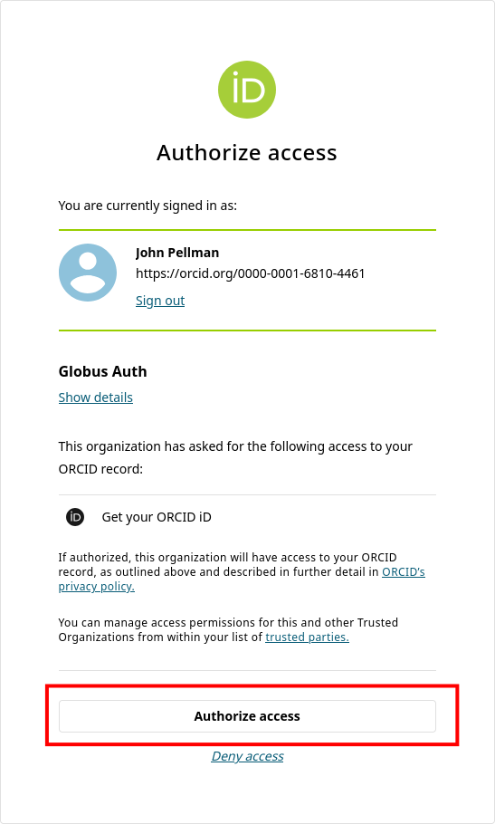
If your ORCID account is successfully linked with Globus, you will be presented with the following screen. Click Continue.
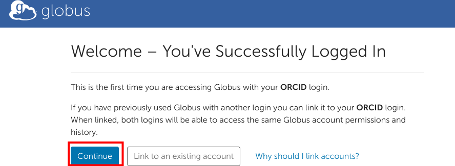
Fill out the subsequent form. Enter in your email address and organizational affiliation when prompted.
Finally, grant Globus the permissions it needs from your ORCID account by clicking on Allow on the last screen:
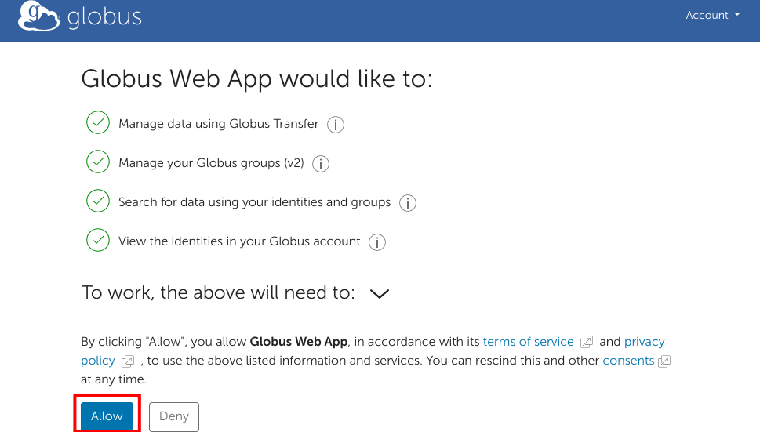
You should now be logged into Globus. For future sessions, you can click the green ORCID button on the main page to log in again.
Logging in with Institutional Credentials
Select your institution from the dropdown on the Globus login page and click Continue.

You will now be prompted with the dialogue you typically use to log in to your institution's services (email, etc). Enter your institutional credentials (e.g., NetID, UNI) and sign in as normal.
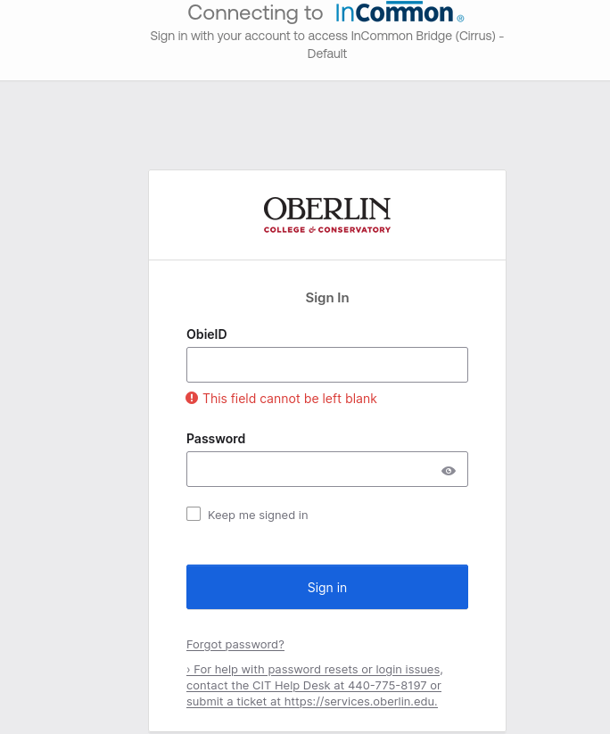
Globus File Manager
Once you have successfully signed in (via ORCID or institutional credentials) you will be presented with the Globus file manager. In the next section, we will describe how you can use this web interface to initiate data transfers to your home institution.
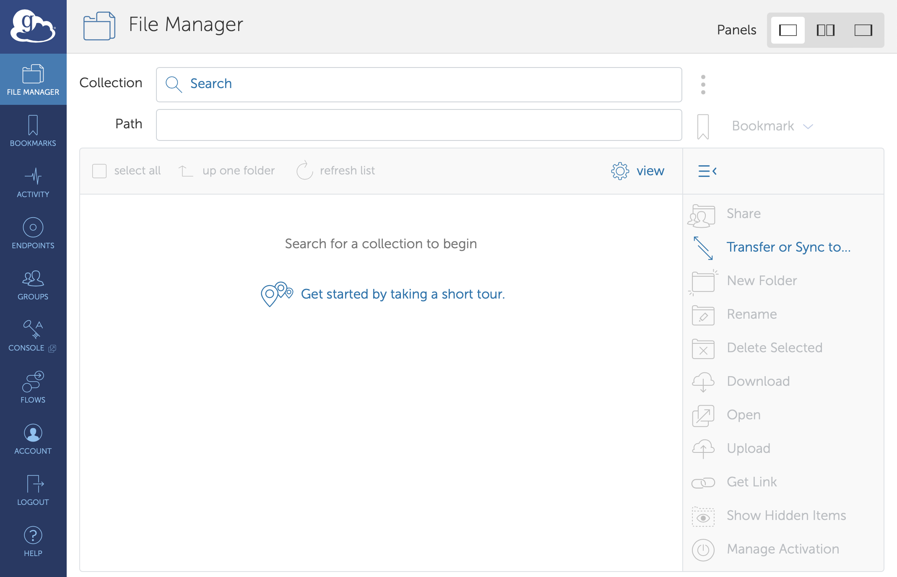
Transferring Data
Transferring files from NYSBC to your personal endpoint
-
Click on the Collections tab and type 'NYSBC#SEMC' This will act as your source endpoint, where you will be transferring files from
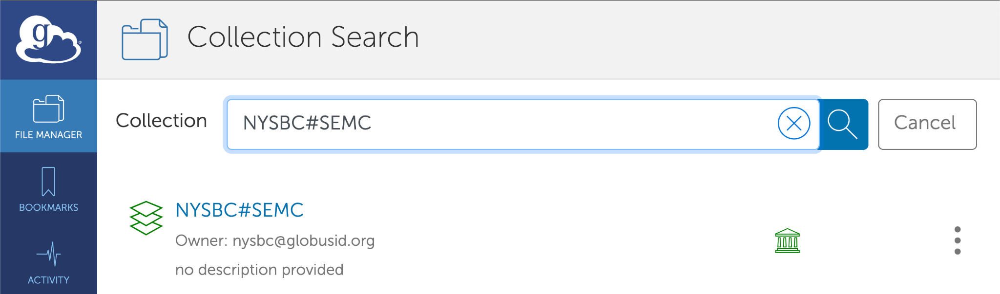
-
You will see a login widget below which will ask for your username and password to authenticate. Please take note that you need to enter the username which was provided by SEMC when you first registered for your project. Also, note that this username is all lowercase
If you are already logged into another NYSBC account. Please go to Settings -> Manage Identities -> NYSBC OIDC Server
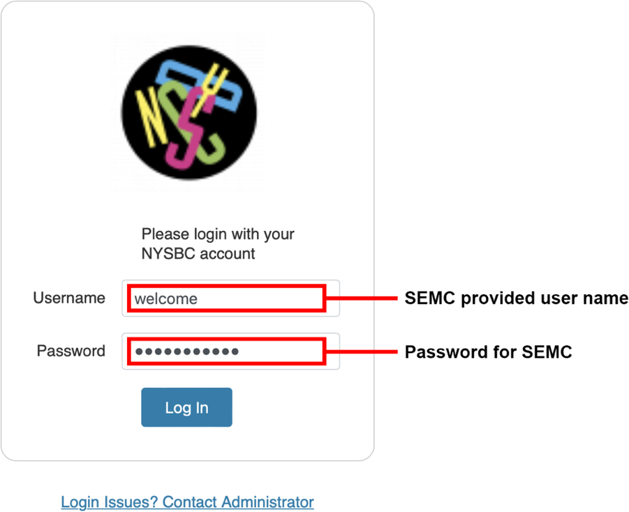
-
After you authenticate, you will see your default path which is currently set at
/h1/<username>.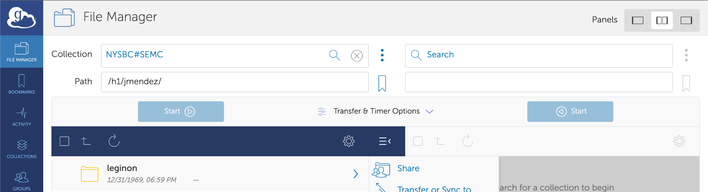
-
You can transfer raw frames and references by selecting the 'frames' folder
- Select your username.
- Then, select the session you want to transfer frames from eg: 22mar18g).
- Under the
rawdatafolder, you will see all your raw frames
-
You can also transfer aligned images by selecting the 'leginon' folder
- Select your username
- Then select the session you want to transfer frames from eg: 22mar18g)
- Under the rawdata folder you will see all your aligned images
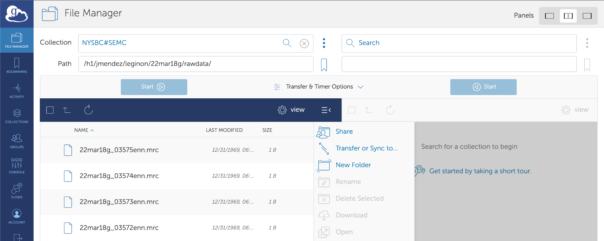
-
Now, you need to select the destination endpoint. For transferring files to your personal computer, you need to install Globus Connect Personal. Click on Endpoints on the left navigation bar and select '⊕ Create a personal endpoint' on the top right of the screen
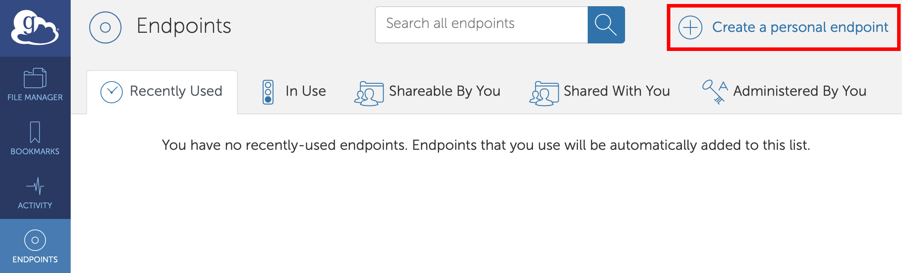
You will see the following screen
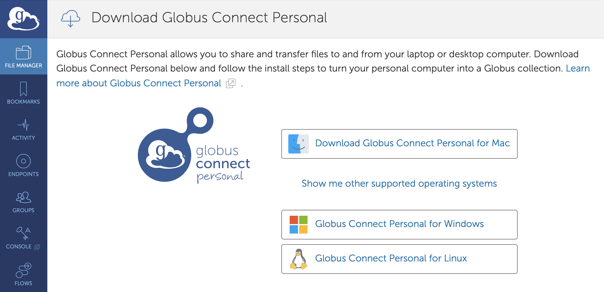
-
Download and install the Globus Connect Personal as per your OS distribution. For specific installation instructions:
- Mac
- Windows
-
Log In, then press allow, this will take you to the Globus Connect Personal Setup
- For Owner Identity, select your Globus ID
- Enter your endpoint collection name. eg: Personal Computer
- Press 'Save'
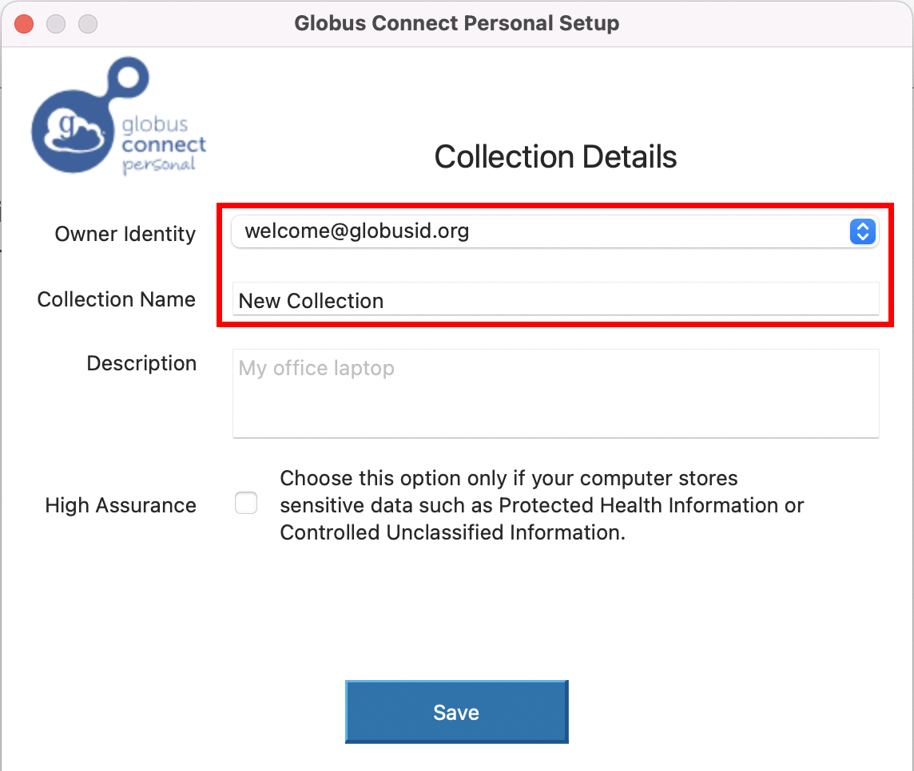
-
Next, select your personal endpoint as your destination endpoint. Go back to the file manager and select NYSBC#SEMC in the Collection tab.
- Then select, transfer and sync to option.
-
On the right side, select your personal endpoint as the destination endpoint. Please see the screenshot.
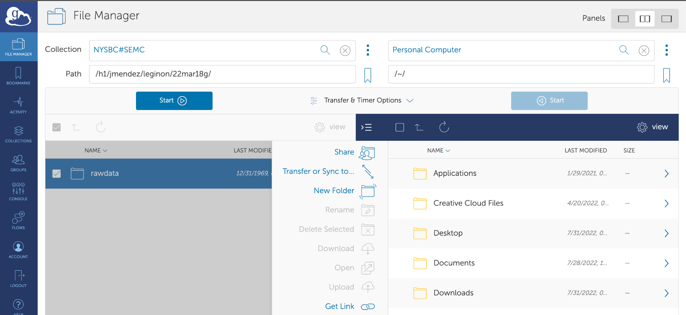
You will now see the folders on your laptop.
-
Once you select the appropriate source and destination folder, then click on Start to initiate the transfer process
-
To monitor the transfer process, click on the Activity tab on the left sidebar
You will see the transfer logs and the message when the transfer is completed.
Note: Sometimes, your personal computer will be under a firewall which will not allow transferring files. To configure your firewall settings, please see the Globus documentation here.
For any issues related to Globus please check the following guides:
Transferring files from NYSBC to your home institution endpoint
- Follow steps 1 - 5 as described above.
- Then select your home institution endpoint as the destination ndpoint. Please contact your organization's IT team to acquire the name f the endpoint authorized by your institution and for the login redentials and queries related to your directory permissions.
- Follow step 11 as described above.
- You can keep track of data transfer status by clicking on the Activity tab. When the transfer is completed, you will see a green check mark and "Condition" will say SUCCEEDED.
FAQ
I'm unable to link my Globus account to my NCCAT/MEMC account from the CUIMC Campus
The typical advice we give to Columbia affiliates if they encounter an error with Globus account linking is to first switch to a different network (e.g., a WiFi hotspot). This is because our Globus endpoint domain (globus3.5540bd.75bc.data.globus.org) apparently cannot be used on certain CUIMC networks. Specifically, our Globus domain cannot be resolved (i.e., its domain name cannot be mapped to an IP address). The domain globus3.5540bd.75bc.data.globus.org is managed by Globus (not us) and in turn, uses Amazon as a domain name provider. Ultimately this means that there is a problem with CUIMC IT's domain name infrastructure where Amazon domains cannot be reached; from the outside it's unclear if this an actual issue or just a matter of policy related to the protection of patient data / PHI.
If you keep encountering this issue, our advice would be to contact CUIMC IT and/or Globus support.
How do I unlink my MEMC account and link my NCCAT account (and vice versa)?
If you currently have a MEMC account linked to your Globus account, you may not be able to access your NCCAT directory (or vice versa). If this is the case, you should use the following instructions to unlink your MEMC account and link to your NCCAT account:
- Click on Manage Identities on the Settings page in the Globus web UI.
- Then on the next page click on the trash can icon in the same row as
@globus3.5540bd.75bc.data.globus.org . and then click on Unlink Identity. - Next time you are prompted to log in with your credentials, use your NCCAT account and its associated password.
My Globus transfer times out every 5-10 minutes and is proceeding very slowly
On rare occasions, your transfer may proceed slowly and then time out at regular intervals. The time-out errors will look something like the following:
Error (transfer)
Endpoint: myuniversity#endpoint(586f0817-9bd9-4eb5-bbdd-017afd630986)
Server: m-98f9a0.99817a.0ec8.data.globus.org:443
Command: STOR
/path/to/myfile.mrc
Message: The operation timed out
---
Details: Timeout waiting for response
As an initial troubleshooting step, we suggest that you run your transfer over a VPN (such as ProtonVPN or Mullvad). If this does not resolve the issue, please contact the MEMC or NCCAT office and we can assist. A longer explanation of the most common cause for this issue can be found below.
Why this issue occurs
If your Globus endpoint is on a university/research institute campus, the particular issue that you are encountering is most likely caused by a quirk of how internet routing works. Our network engineer has configured our gateway router so that outgoing traffic is sent over NYSERNet (our regional research and education network). Our network also sends a message to other networks (such as your institution's network) telling them to send incoming traffic over NYSERNet as well. However, sometimes this message (a route advertisement) does not reach a network, and incoming traffic is routed differently.
This asymmetry in routing (outbound traffic over NYSERNet, inbound traffic from another network) causes the connection to become periodically interrupted, and every time this happens your Globus client needs to create an entirely new connection, which slows the transfer down considerably.
Our network engineer's workaround for this is to manually implement an exception to our normal routing logic. For this to work, we require a fixed IP address or range for the destination that traffic should go to.